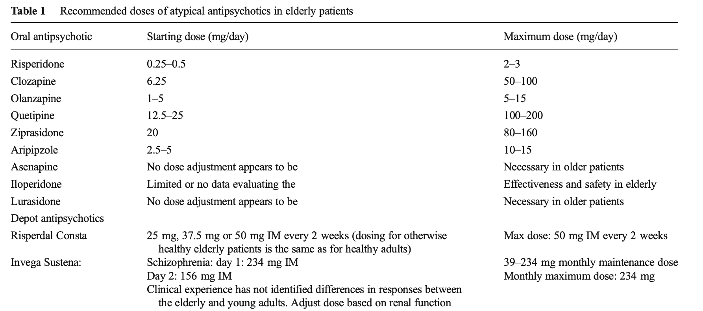

80 노년기 조현병 환자의 치료
노인 조현병 환자를 치료할 때 참고할 수 있는 자료는 많지 않다. 그러나 의사들의 공통적인 경험을 통해 일반적인 치료 원칙을 제시할 수는 있다. 노인 환자들은 공격성과 충동성을 보일 위험이 젊은 환자보다는 상대적으로 적으며, 사소한 부작용에도 힘들어할 가능성이 높기 때문에 젊은 환자보다 소량의 용량을 사용하는 것이 원칙이다. 또한 설령 약물 부작용 때문이 아니더라도 신체적 동반 질환이 악화될 가능성이 높기 때문에 정신과 의사라 해도 신체적 문제에 신경을 많이 써야만 한다.
80.1 치료 결과에 있어서 코호트의 역할
80.1.1 코호트의 개념
노인 환자와 젊은 환자의 신체적 차이를 논하기 앞서, 현재 노년기에 접어든 환자들은 그들이 젊었을 때 현시대와는 전혀 다른 삶을 겪어왔다는 것을 이해해야 한다. 현재 70~80대 환자들이 1940~50년대에 태어났다고 가정했을 때 이들이 어렸을 때는 영양 상태가 좋지 않았고, 청소년기 후반이나 청년기에는 일본의 침략 전쟁과 6.25 전쟁을 겪었다. 이후 정신질환이 발병한 후에는 제대로 항정신병 약물을 써보지도 못하고 수용시설에 갇혀 지냈거나, 오랜 세월 정형 항정신병 약물에 노출되었다.
코호트란 특정 시점에 태어난 사람들을 가리키는 용어로, 이들은 다른 코호트와 구별되는 독특한 역사적 경험을 공유한다. 연령에 따라 치료반응이 달라진다고 할 때, 이는 노령화에 따른 신체적 변화때문일 수도 있지만, 서로 다른 코호트가 서로 다른 역사적 경험을 했기 때문일 수도 있다. 항정신병 약물이 본격적으로 도입되어 탈원화가 이루어진 것은 미국과 같은 선진국에서도 1960대 중반 이후였기 때문에, 이전에 치료를 시작한 환자와 이후 환자들은 극적으로 차이가 있다.[1] 우리나라에서는 이 시기가 훨씬 뒤로 미루어졌으며, 약물의 보급보다도 정신보건법의 개정을 통한 탈원화가 이슈화 되기 시작한 90년대 말 이전과 이후로 구분된다.
80.1.2 시설수용 치료 코호트
현재 조현병을 앓고 있는 노인 중에서, 중장년기를 만성 정신병원이나 사설요양원에서 수용되었던 환자들이다. 이들은 대체로 경과가 좋지 않으며 현재 상태도 매우 불량하다. 원인은 여러가지를 생각해볼 수 있다. 첫째, 이들이 발병하였을 때는 항정신병 약물이 보급되기 전이었다. 현재까지의 연구를 종합하면 초발 시기의 적극적인 치료는 이후 경과에 큰 영향을 미칠 수 있다. 이 코호트는 이러한 조기 치료의 혜택을 받지 못했기 때문에 결과가 나쁠 수 밖에 없다. 둘째로 오랜 기간 수용되어 있었기 때문에 사회생활에 적응할 기회가 없었고, 따라서 사회기능의 심각한 손상과 함께 수용시설 밖이 환경을 두려워하게 된다. 셋째, 이러한 사회적 소외와 단절로 말미암아 지지 체계를 잃어버렸고, 퇴원하여 지역사회로 돌아왔다 하더라도 이들을 기억하는 가족도 친구도 없이 공적 제도에 의지하여 살아갈 수 밖에 없다. 물론 애초에 증상이 심한 환자들이 수용시설에 오래 갇혀 있었을 가능성이 크지만, 이 환자들이 좀더 지역사회에 머물러 있으면서 치료를 받았다면 좀더 나은 결과를 기대할 수도 있었을 것이다.
80.1.3 지역사회 치료 코호트
미국에서는 1960년대 중반을 기점으로 초대형 주립 정신병원들이 폐쇄되기 시작하였고, 환자들은 지역사회로 옮겨갔다. 물론 이들 중 일부는 증상이 심하거나 지역 사회에 편입되지 못하여, 병원이 아닌 다른 시설에 횡수용(trans-institutionalization) 되기도 하였지만, 나머지는 초기 형태의 지역사회 지원과 심리사회적 재활 서비스의 수혜자였다.[2,3] 이들은 여전히 증상이 남아있고, 기능이 떨어져 어려움을 겪었지만 그럼에도 불구하고 지역 사회 적응에 성공하였고, 다양한 정신보건 서비스를 이용하는데 익숙해졌다.[4] 정신보건센터 등을 통해 유사한 어려움을 겪는 다른 환자들과 친교를 맺으며, 서비스 제공자들의 지지와 환자 커뮤니티의 소속감 속에서 공동체 의식을 획득하기도 한다.
80.1.4 가족 관계의 변화
전통적으로 조현병을 앓는 환자에 대한 보살핌과 지지는 가족 구성원들이 떠맡아 왔다. 젊었을 때 발병한 환자들을 보살피고, 투약과 치료 결정을 도맡아온 것은 대체로 부모님이었다. 환자들은 결혼하여 가정을 꾸릴 확률이 적고, 직업이나 사회활동을 통해 지인을 늘릴 가능성도 떨어진다. 급기야 부모님이 돌아가시고 나면 의지할 사람이 아무도 없는 상황에 맞닥뜨리다. 심지어 부모님과 함께 거주하던 주거지를 잃기도 한다.
연령이 높은 환자일수록 전적으로 부모에게 의지하여 살아왔을 가능성이 크다. 과거 우리나라 문화에서 집안에 정신병 환자가 있으면 외부에 노출을 꺼리고, 친척들에게도 비밀에 붙이곤 하였다. 이런 환자들은 부모가 돌아가시고 나면 더더욱 의지할 곳이 없어지며, 친척들도 외면하기 일쑤다. 현대에 접어들수록 부모가 살아있을 때부터 공공 서비스를 적극적으로 이용하는 추세가 늘어나고 있으며, 과거와 같이 곤란한 경우는 조금씩 줄어들고 있다.
80.2 노인 조현병 환자를 둘러싼 낙관론과 비관론
많은 연구자들은 노인 조현병 환자들의 치유 가능성과 예상보다 높은 기능 수준 및 삶의 질에 대해 강조해왔다. 그러나 이러한 강조는 역설적으로 팽배해있는 비관론을 감추기 위한 시도로 보이기도 한다. 크레펠린이 관찰했듯이 조현병 환자는 나이가 들 수록 치매 환자와 구분하기 어려워지며, 완전한 회복의 가능성도 희박해보인다. 일생을 통해 성취의 기회도 줄어들며, 의미있는 삶을 살기 힘들 뿐더러 사회적 부담이 될 가능성이 높다. 그러나 Harding[5]이 언급했듯이, 나을 수 있다는 환자 또는 다른 누군가의 믿음이 치유에 긍정적인 역할을 한다. 따라서 부정적인 시각을 낙관론으로 바꿔나가는 것이 중요한 듯 하다.
성인에서의 신경가소성이 보편적으로 받아들여진 이후[6], 정신기능과 이를 뒷받침하는 신경계 구조가 삶의 경험을 통해 달라질 수 있다는 기대 역시 팽배해졌다.[7] 뇌의 적응 및 보상 능력은 생각보다 크며, 이는 뇌졸중이나 뇌손상 환자의 재활 과정을 통해서도 증명된다. 생물학적인 적응 뿐 아니라 심리적 적응 능력 역시 무시할 수 없다. 회복탄력성(resilience)이라고도 불리는 적응 능력은 끔찍한 악조건 속에서도 심리적 균형을 되찾게 만들어준다. Shepherd 등[8]은 50세 이상의 조현병 환자를 인터뷰하여 질적 연구를 수행하였다. 참가자들은 질병 초기에는 진단 및 증상, 사회로부터의 소외가 너무도 혼란스러웠다고 보고하였다. 그러나 급성기 이후에는 거의 모든 참가자들이, 자신의 증상을 관리하는 기술이 좋아졌다고 말하였다. 자신의 기능 수준에 대해서는 보다 부정적으로 인식하였는데, 1/3은 현재 상황과 원래의 인생 목표가 어긋난 데 대해 절망하고 이었고, 절반 가까이는 누군가에게 의지할 수 밖에 없는 상황을 체념적으로 받아들이고 있었다. 그러나 20%의 환자들은 자신의 삶이 보람되었고, 미래에 대해 낙관적인 기대를 품고 있다고 진술하였다.
조현병을 앓고 있는 환자들 역시 정상 노인들이 사용하는 대처 전략을 사용하고 있었다. Cohen 등[9]이 조사한 바에 따르면 노인 조현병 환자 역시 일상의 스트레스를 처리하기 위해 상황을 수용하거나 유머 감각을 유지하거나 또는 사람들과 어울리는 전략을 사용하였다. 조현병 증상에 대처하는데, 젊은 환자보다 유리한 점이 있는 지는 확실하지 않다. 다만 젊은 환자에 비해 분노와 열등감이 줄고, 현상황을 있는 그대로 받아들이는 면은 늘어나는 것 같다. 뉴욕 시에 거주하는 노인 조현병 환자를 조사해보았더니, 환청 내용이 유쾌하거나 지지적인 비율이 젊은 환자보다 높았다. 환청에 겁을 집어먹는 경우보다는, 일상에 간섭하는 환청이 시키는대로 따르는 비율도 높아졌다. 이런 현상이 꼭 바람직한지는 의문이지만, 환청에 대해 주관적 불쾌감을 느끼는 경우는 훨씬 줄어드는 것 같다.[10]
80.3 약물 치료의 일반적 지침
노인은 젊은이보다 약물 부작용이 나타날 확률이 높으며, 사소한 부작용에도 고통받을 가능성도 높아진다. 따라서 용량을 최소화해야 하며, 약물 치료 대신 심리사회적 대체 전략을 강구할 필요성이 높아진다. 질병을 치료한다기 보다는, 질병을 지닌 채 노년기를 성공적으로 보낼 수 있게 하기 해, 인지교정치료(cognitive remediation therapy), 사회기술 요법, 인지행동치료가 도움이 된다.[11–13] 그러나 이러한 이상적인 접근 전략과는 대조적으로, 임상 실제에서는 환자의 입장보다 환자를 돌보는 사람들의 입장이 우선시되면서 항정신병 약물이 적극 사용되는 경우가 많다.
노인 환자에게 부득이하게 약물 치료를 할 때 가장 강조되는 규칙은 “정신 증상보다는 신체 상태에 중점을 두어, 필요한 최소한의 약제만 투여하는 것”이다. 젊었을 때부터 안정적으로 유지 치료를 하는 중이라도 영양 상태 변화, 감염, 골절/통증 등으로 인한 운동량 변화, 동반 질환이나 수술 등 상황이 생길 때마다 투여 용량을 조절해야 한다. 정신 증상과 신체 상태를 주기적으로 재평가하여, 불필요하다고 판단되는 약물을 과감히 중단한다. 노인들은 다양한 문제로 인해 투여 약물이 많아지기 때문에, 약물 상호작용에 대한 고려도 잊지 말아야 한다. 마지막으로 인지 기능 저하나, 돌봐주는 사람의 부재로 인하여 약물에 비순응하거나, 과다 복용하는 사례가 없도록 주의해야 한다. 이러한 원칙을 정리하면 아래와 같다.
- 낮은 용량에서 천천히 시작한다.
- 용량 조절은 천천히 해야 한다.
- 젊은 환자보다 상당히 낮은 용량에서도 최대 효과를 얻을 수 있다.
- 기립성 저혈압, 진정같은 사소한 부작용도 낙상의 위험을 높인다.
- 노인은 특별히 추체외로 부작용에 민감하며, 동시에 항콜린성 부작용에도 민감하기 때문에 항파킨슨제를 조심해서 사용한다.
- 다중약물 요법때문에 생기는 약물 상호작용에 주의한다.
- 비전형 항정신병 약물이 정형 약물 보다 안전하다.
- SSRI, SNRI와 NARI, NaSSa가 TCA보다 안전하다.
- 리튬 사용 시 혈중 농도가 쉽게 변동하고, 갑상선과 신기능 부작용이 드물지 않기 때문에 자주 모니터링한다.
- 고령 자체가 자살의 위험요인이므로 항상 자살 위험을 검토한다.
노인 환자에서 용량 결정은 매우 까다로운 문제이며, “낮은 용량으로 시작하여 천천히 증량한다”는 원칙은 있지만 어느 정도까지 안전하게 사용할 수 있다는 기준은 없다. Khan 등은 중년 이상 환자를 대상으로 이루어진 임상 시험 결과를 바탕으로, 표 __와 같이 항정신병 약물의 용량 지침을 제시하였다.[14]

80.3.1 노년기 신체 변화와 약물 사용
노화로 인한 신체 기능 변화는 약동학적 수치의 변화를 가져온다. 동일한 용량을 투여했을 때 약물 농도를 결정하는데는 분포 용적(volume of distribution, Vd)이 중요한 역할을 하는데, 노인이 되면 분포 용적이 종잡을 수 없이 변화된다. 체내의 수분/지방의 비율이 점점 줄어들기 때문에 친수성 약물(hydrophilic drugs)은 Vd가 작아져 농도가 올라가고, 지방친화성 약물(lipophilic drugs)은 Vd가 커져 반감기가 길어진다. 혈청 내 알부민 농도가 줄어들기 때문에 단백결합 비율이 높은 약물의 결합되지 않은 혈장 농도가 높아진다. 간기능과 신장기능이 떨어져 약물 제거가 느려지기 때문에 약물의 반감기가 증가한다. 이런 변화들이 야기하는 문제는, 변화하는 외부 상황에 대응하는 생리적 리저브(physiological reservoir)가 줄어든다는 것이다. 단순히 용량 대비 혈중 농도가 늘어나는 것에 그친다면, 용량을 조금 줄이는 정도로 충분하겠지만, 노화의 문제는 신체 상황 변화에 따라 약물 농도가 급격히 변화한다는 점이다. 따라서 용량을 줄였다고 안심하고 있어서는 안 된다.
약동학적 변화 뿐 아니라 약력학적 변화도 문제가 된다. 나이가 들면 아세틸콜린, 세로토닌, 도파민 수치가 감소하며 이를 생성하는 효소의 활성도 떨어진다. Cholecystokinin과 somatostatin의 면역반응성( immunoreactivity)가 떨어지며 대신 substance P의 면역반응성이 증가한다.[15] 산화 스트레스를 방어하는 superoxide dismutase (SOD), glutathione-peroxidase, catalase 등의 활성이 떨어지면서, 세포 내에 노폐물이 쌓이게 된다. 신경세포의 흥분도도 떨어지며, 신경전달물질 수용체 농도의 변화도 관찰된다.[16] 수용체 농도가 감소한다는 것은 약물의 효과이든 부작용이든 젊은 환자에 비해 증폭해서 나타날 가능성을 시사한다.
이러한 변화들이 항정신병 약물의 효과에 어떤 영향을 미칠 지는 아직 충분히 밝혀져 있지 않다. 동일한 효과를 내기 위해 좀더 높은 약물농도가 필요할 지, 그 반대일 지조차 알려져 있지 않다. 게다가 자연적인 노화의 영향과 오랜 세월 항정신병 약물의 사용해온 누적된 결과를 구분하는 것도 매우 어려운 과제이다. 이보다 분명한 것은 동일한 용량을 사용하더라도 부작용 발현율이 높아진다는 것이다. 아드레날린 수용체 차단에 의한 기립성 저혈압, 항콜린 효과에 대한 빈맥이나 장운동 감소 등은 젊은 환자에 비해 과다하게 나타난다. 추체외로 부작용이나 지연 운동 이상증의 위험도 높아진다. 한 예로 저용량의 정형 항정신병 약물로 치료받는 노인에서 지연 운동 이상증의 연간발생률은 26.1%로 젊은 환자에 비해 무려 5~6배 정도 높다.[17,18]
80.3.2 동반 질환의 문제
대표적인 성인병인 대사증후군은 노인 환자들의 이환률(morbidity) 및 사망률(mortality)을 높인다. 조현병 환자들은 약물과 관계없이도 대사증후군의 위험이 높으며, 장기간의 비정형 약물 치료는 위험률을 더 높여준다. 오랜 기간 동안 안정적으로 사용해왔던 항정신병 약물을 바꾸기란 쉽지 않은 일이다. 이 때문에 대사증후군이 발생한 이후에도, 과거에 사용하던 약물을 쉽게 바꾸지 못하는 경우가 태반이다. 용량을 좀 줄이는 것 만으로 대사증후군 문제를 해결할 수 있는 지는 의문이다. 그렇다고 대사증후군이 발생한 환자는 무조건 아리피프라졸이나 지프라시돈으로 바꿔야 한다는 일부 지침서는 다소 무책임한 듯 보인다.
오래전부터 항정신병 약물을 사용해온 환자는 폐렴에 걸릴 위험이 높다고 알려져 왔다.[19] 조현병 환자의 운동 부족이나 동반된 대사증후군 등이 교란 변수로 작용할 수 있지만, 항정신병 약물이 면역 기능을 변화시킬 가능성이 그 원인으로 제기되기도 하였다.[20] 나이가 들면서 저절로 면역 기능이 떨어지고, 감염의 위험이 높아지기 때문에 이는 문제가 아닐 수 없다. 특히 다른 원인으로 이미 면역 체계에 혼란이 생긴 환자, 반복적으로 세균/바이러스에 감염되는 환자에게 항정신병 약물을 어떻게 사용해야 할 지는 문제가 아닐 수 없다. 최근에 COVID 감염이 전세계적으로 보건학적 위기를 일으키면서 이 문제는 초유의 관심사가 되고 있다.[21,22]
노년 환자들은 호흡기 질환을 동반하고 있을 가능성이 높기 때문에 약물에 의한 호흡 부전의 위험을 고려할 필요가 있다. 이들은 만성적인 불면 때문에 꼭 정신과가 아니더라도, 다양한 진료과에서 진정제 및 수면제 처방을 받고 있을 확률이 높다. 천식, 만성 폐쇄성 폐질환 등 호흡기계 질환을 가진 환자들은 기관지 확장 효과를 위해 이미 항콜린제를 쓰고 있기도 하다. 이러한 환자들에게 항정신병 약물을 사용하면 진정 효과가 지나치게 되거나, 항콜린 효과가 누적되어 문제를 일으킬 수 있다. 항정신병 약물은 진정 효과와 별도로 중추성으로 호흡 부전을 일으킬 수 있다. 한 연구에 따르면 만성 폐쇄성 폐질환 환자에게 항정신병 약물을 투여했을 때, 급성 호흡 부전을 일으킬 위험은 1.66배 증가하였다.[23]
항콜린 제제의 사용은 특히 노인 환자에게 문제가 된다. 노년의 생리적 변화때문에 이들은 항콜린 효과에 더욱 민감하다. 게다가 항히스타민제, 진경제, 궤양치료제, 기관지 확장제, 혈압강하제, 이뇨제, 비뇨기계 약물 등은 항콜린 효과를 지니고 있기 때문에, 다약제 복용이 흔한 노인들은 이러한 효과가 누적될 수 있다. 항콜린 제제는 입마름, 변비, 절박뇨, 시력저하 등과 같은 사소한 부작용 뿐 아니라, 빈맥/부정맥, 장폐색, 요저류, 환각, 섬망 등의 심한 부작용을 일으킬 수 있다. 게다가 만성 항콜린제 사용은 대뇌 콜린 시스템을 변화시켜, 알츠하이머 치매나 루이소체 치매와 유사한 상태를 유발할 수 있다.[24] 일부 학자들은 이를 “약물 유발 알츠하이머 상태 (drug‐induced alzheimerism”라고 부르기도 한다.[25] 노인 환자는 유달리 추체외로 증후군에 민감하기 때문에 항콜린제를 써야할 경우가 많다. 항정신병 약물과의 인과관계가 불확실한 운동장애, 근육떨림 등의 증상이 많은데, 이를 해결할 방법이 막연하여 항콜린제를 사용하게 되기도 한다. 문제는 조현병 환자는 병 자체때문으로도 이미 인지 기능 저하를 보이지만, 항콜린 제제를 오래 사용하면 더욱 저하의 폭이 커진다는 것이다. 혈중 항콜린 활성과 인지 기능 간의 역상관 관계는 오래전부터 반복해서 보고되었다.[26,27] 비정형 약물 시대가 도래한 후, 추체외로 증후군의 예방을 위해 통상적으로 항콜린 제제를 사용하는 경우는 많이 줄었지만, 클로자핀, 올란자핀, 퀘티아핀 등의 약물은 용량 의존적으로 항콜린 효과를 보인다. 이에 비해 아리피프라졸, 리스페리돈, 지프라시돈 등의 약물은 이런 효과가 없다.
노인 인구의 주된 사망 원인 중 하나는 심혈관 질환이며, Hennekens 등에 따르면 조현병 환자들의 기대수명이 단축되는 주된 원인 역시 심혈관 질환이다.[28] 따라서 노인 조현병 환자를 치료할 때는 심혈관 질환의 위험인자를 파악하고, 환자의 생활 습관을 개선하며, 타 진료과와 적극 협조할 필요가 있다. 항정신병 약물 사용 시, 기립성 저혈압이나 빈맥은 매우 흔한 부작용이며, 극히 드물긴 하지만 QTc 연장에 의한 부정맥이나 급사의 위험도 무시할 수는 없다.[29]
80.3.3 약물 사용과 사망률
조현병 환자에게 항정신병 약물을 사용하는 것과 치매 환자에게 사용하는 것이 상황이 다르긴 하지만, 노인 환자에게 사용할 때 위험이 배가된다는 점은 공통적이다. 2000년대에 접어들면서 치매 환자에게 항정신병 약물을 사용할 때 뇌졸중 위험이 증가한다는 것을 이유로 미국 FDA는 2003년에 리스페리돈, 2004년에 올란자핀, 2005년에는 아리피프라졸에 대해 소위 black box warning을 약품 설명서에 추가하도록 하였다. 메타 분석결과 노인 치매 환자에게 종류를 불문하고 항정신병 약물을 사용하면 사망률이 1.54배 증가하는 것이 확인되면서, 급기야 2008년에는 black box warning이 모든 종류의 항정신병 약물에 확대되었다.[30]
노인 조현병 환자를 대상으로 한 임상 연구들은 대부분, 젊은 환자에게 사용하는 항정신병 약물이 노인 환자에게도 효과적이며, 부작용 발현 비율도 젊은 환자에 비해서 크게 높지 않다고 강조한다.[31–35] 부작용 측면에서 강점이 있는 퀘티아핀, 아리피프라졸, 지프라시돈이 노인 환자에게 추천되는 경향이 있지만, 다른 약물에 비해 뚜렷한 장점이 있는 지는 불분명하다. 그러나 이렇듯 효과와 안정성을 강조한 대부분의 연구가 제약회사 지원을 받아 이루어졌다는 점을 간과해선 안 된다.
노인 치매 환자에서 항정신병 약물을 사용했을 때의 사망률 증가가, 연령 때문인지 치매 때문인지는 확실하지 않다. 만약 연령때문이라면 노인 조현병 환자 역시 위험에서 자유롭지 못하다. 노인에게 항정신병 약물을 사용하는 것을 반대하는 연구자들은, 치매 뿐 아니라 다양한 정신질환에서도 항정신병 약물이 모든 원인에 의한 사망률(all-cause mortality)을 높인다고 주장하고 싶어한다.[36,37] 그러나 이를 입증하기는 매우 어렵다. 약물 사용 여부와 상관없이 조현병 등 심각한 정신질환을 앓고 있는 환자들은 심혈관계 질환이나 뇌졸중 등의 발병 위험이 높으며, 따라서 사망률도 높다.[38] 게다가 노인 조현병 환자의 물질 남용이나 자살률 역시 꽤 높은 편이기 때문에, 오히려 약물 사용으로 사망률을 낮춘다는 연구도 적지 않다. 이러한 관점은 장기지속형 주사제 사용 군이 가장 사망률이 낮았다는 연구를 통해 뒷받침된다.[39] 따라서 비록 신체적 합병증에 의해 사망률을 높이는 요인이 있다 하더라도, 정신 증상 조절에 의해 사망률을 낮추는 효과가 더 크기 때문에, 조현병 환자라면 노인이라도 항정신병 약물을 사용하는 것이 권장된다.
80.4 신체 질환 관리
80.4.1 성인병 위험의 관리
노인 조현병 환자를 전문적으로 치료하는 정신과 의사는 정신의학 뿐 아니라 다양한 내과적 문제에 대한 지식도 갖추어야 한다. 이들에 대한 치료는 정신증상 관리에 국한되지 않으며, 신체적 건강을 유지하는 것까지 포함한다. 조현병을 비롯하여 심각한 정신질환을 앓고 있는 환자들은 기대 수명이 짧다.[40–42] 사망 원인은 자살을 제외하면, 대부분 심혈관 질환, 대사성 질환을 포함한 성인병으로, 환자들의 불건전한 생활양식(흡연, 나쁜 식습관, 운동부족)과 비정형 항정신병 약물에 의한 부작용이 그 원인으로 지목되었다. 그러나 최근에는 약물 치료와 관계없이 대사성 지표가 악화되는 것이 입증되었기 때문에, 조현병이라는 질환 자체가 다양한 성인병의 위험을 높일 수 있다고 생각되고 있다.[43]
조현병 환자가 노인이 되었다는 것은, 인생의 가장 힘든 시기를 겪어낸 생존자라는 의미이다. 따라서 젊은 환자에 비해 사고나 자살로 인한 사망률은 덜할 것이라 기대할 수 있다. 그러나 기대 수명이 대조군에 비해 짧은 것은 노인 환자라 해도 예외가 아니다.[44,45] 노인 환자들은 인지 저하를 포함한 정신 증상으로 고통받을 뿐 아니라, 갖가지 건강 문제와 직면하고 있다. 적어도 노인 환자에 있어서 조현병 치료란 동반된 신체 증상에 대한 관리 및 치료까지도 아우른다.[46–48]
노인 조현병 환자가 다양한 신체질환을 동반하는 것은 분명하지만, 오히려 시스템이나 환자 개인의 요인으로 신체 질환을 잘 발견하지 못하거나 불충분하게 치료받을 위험성이 있다.[49] 일례로 조현병 환자에게 암 발생율은 낮게 보고되는데 비해, 일단 암에 걸렸을 때 치사율이 대조군에 비해 높다는 것은, 진단이 내려졌을 때는 이미 치료 시기를 놓친 경우가 많다는 것을 시사한다.[50] 설령 조기에 진단을 받았다 하더라도, 동반된 질환에 대해 치료순응도가 떨어지거나 관리가 제대로 안 되고 있을 가능성이 높다. 노인 조현병 환자들에게 있어서, 신체 질환 치료에 대한 순응도는 항정신병 약물에 대한 순응도보다도 떨어질 수 있다. 동년배와 비교 시 중년, 노년의 조현병 환자는 동반된 신체 질환에 대한 증상 이해와 그에 대한 질병 관리 수준이 유의하게 낮았다.[51]
정신과 의사가 동반된 신체 질환 치료에 대한 책임을 직접 질 수는 없을 것이다. 그러나 조기에 의심 증상을 발견하고, 필요한 진료과의 협진을 구하며, 환자로 하여금 신체 질환 치료에 순응하도록 유도하는 것은 정신과 의사의 책임이라 할 수 있다. 이를 위해서는 개개 환자에 대한 사례관리 전략이 필요하다. 정신보건을 담당하고 있는 치료진과 신체 질환에 대한 진료를 제공하는 치료진 간에 의사소통의 채널을 강화하고, 개개 환자에게 필요한 전략을 마련하는 것이 도움이 된다. 뿐만 아니라 환자의 사회적, 인지적 기술 향상을 통해 스스로 자신의 건강관리를 해낼 수 있도록 유도할 필요가 있다.[52,53]
80.4.2 기타 흔한 의학적 문제들
조현병 환자이든 아니든, 노인들은 균형을 쉽게 잃고 넘어지는 일이 잦으며 골밀도가 낮은 경우에는 쉽게 골절로 이어진다. 65세 이상의 노인 중 ⅓ 이 일년에 적어도 한번 낙상 사건을 경험한다. 80세 이상이 되면 이 비율이 50%까지 올라간다.[54] 낙상의 원인은 균형을 잃기 때문일 수도 있지만, 기립성 저혈압 및 실신 때문일 수도 있다.[55] 후자라면 심혈관 기능저하를 의심해보아야 한다. 항정신병 약물이나 항콜린 약물은 후자의 원인에 의한 낙상 위험을 높일 수 있다. 진정 작용이 강한 약물을 사용하는 경우, 수면중 화장실에 간다고 잠깐 일어났다가 낙상하는 경우가 잦다.[56]
낙상이 골절로 이어지는 비율은 약 5%에 이르며, 대부분 고관절과 원위 요골의 골절이다. 고관절 골절을 당한 이후 12개월 내 사망률은 무려 24%에 이르며, 더 많은 비율의 환자들은 가정으로 돌아가지 못하고 요양원에서 생활해야 한다.1 항정신병 약물은 프로락틴 농도를 높이며 이는 여성에게 있어 골밀도가 낮아지는 중요한 원인이 된다.[57] 최근에는 남성 조현병 환자 역시 성호르몬 감소로 인해 골밀도가 낮아진다는 것이 알려지기 시작하였다.[58] 따라서 노인 조현병 환자는 낙상 위험이 높을 뿐 아니라, 낙상이 골절로 이어질 위험도 높다고 보아야 한다.
1 Hip Fracture Outcomes in People Age 50 and Over (1994) United States Congress Office of Technology Assessment
노인 조현병 환자가 급성 신체적 질환을 앓게 되거나 수술을 하였을 때 드물지 않게 섬망으로 이어진다. 조현병과 양극성 장애 등 심한 정신질환을 앓고 있는 환자가 신체 질환 때문에 입원했을 때, 섬망이 나타난 비율은 14.6%로 일반 환자에 비해 매우 높았다.[59] 유의한 위험 인자는 연령, 항콜린제 사용 그리고 양극성 장애 진단이었다. 조현병 자체가 섬망에 대한 취약성을 증가시키는지는 불확실하지만, 약물의 영향은 분명해보인다. 항콜린제, 항히스타민제, 삼환계 항우울제, 마약성 진통제, 수면제와 벤조디아제핀, 그리고 항정신병 약제는 모두 섬망의 위험을 높인다.[60] 조현병 환자에게 흔히 병용 투여되는 벤조디아제핀은 불필요하게 높은 용량이 들어가도 섬망의 위험이 있지만, 신체적 문제로 입원하면서 갑자기 중단되는 바람에 금단으로 인해 섬망의 위험이 높아지기도 한다. 한편 항정신병 약물은 섬망의 주된 치료제이긴 하지만, 동시에 섬망의 위험을 높이는 이중적인 측면이 있다. 그 기전은 알려져 있지 않다.
요실금 및 변실금 역시 크게 주목받지는 않지만, 노인 환자에서 흔히 접하게 되는 문제이다. 노화로 인한 신경계 퇴화, 근육량 감소 및 다양한 성인병의 후유증으로 실금(incontinence)의 유병률이 높아진다. 약물에 의한 요인도 간과할 수 없다. 특히 정형 항정신병 약물은 요실금의 위험을 높이며, 클로자핀을 비롯한 비정형 약물 역시 요역동학의 변화를 가져온다.[61,62]
노인 환자들이 실금 증상을 보이면 당황스러움과 수치스러움, 잦은 화장실 출입으로 말미암은 낙상 위험의 증가로 이어질 수 있다.[63] 실금이 있는 노인들은 전문적 치료를 받기 전에 수분 섭취를 제한함으로써 증상을 해결하려하는데, 이는 탈수, 전해질 불균형으로 인한 섬망을 초래할 수 있다. 약물의 영향인지 아닌지를 불문하고, 연령과 상관없이 조현병 환자가 요실금을 경험할 위험은 대조군의 1.78배로 높다.[64] 아마도 노인 조현병 환자는 더 위험이 높을 것으로 예상된다. 위험인자의 제거 및 약물 치료, 행동 요법 등 다차원적인 치료전략이 세워져야 한다.
80.5 전기경련 치료
전통적으로 전기경련 치료(ECT)는 오랜 동안 병을 앓아온 노인 환자에게 효과적이지 않은 것으로 여겨졌다. 이는 유병기간이 치료효과와 반비례한다는 믿음 때문이었다.[65,66] 그러나 다른 여지가 없는 치료저항성 환자라던지, 긴장증 환자라면 ECT를 고려할 수 있겠다.[67] Kumagaya[68]는 2012년부터 18년 사이에 호주에서 시행된 조현병과 조현정동장애 환자에서의 ECT 사례를 조사하였다. 모두 20건의 사례가 발견되었는데, 환자들의 평균 연령은 69세였다. 이들은 평균 7개의 항정신병 약물에 반응이 없었고, 절반은 클로자핀에도 저항성을 보였다. 결과는 매우 고무적으로 60%가 완전관해를 35%가 부분관해를 보였다. 하지만 6-7년 사이에 20건 밖에 이루어지지 않았다는 것은 여전히 노인 환자에서의 ECT 시행을 꺼리고 있다는 반증이라 하겠다. 노년기 환자는 신체질환의 동반이환이 높기 때문에, ECT 금기에 해당되는 경우가 많으며 아무래도 젊은 환자보다 부작용의 빈도가 높다. 일부 환자는 심한 역행성 기억상실을 호소하기도 하나 대부분의 경우 저절로 해소된다.[69]
ECT의 효과는 단측성보다는 양측성 시술이 우수하지만, 노인 환자에서 부작용을 줄이기 위해 단측성을 시도할 수 있다. 처음에 단측성으로 시작하여 몇 번의 치료에 반응이 없으면 양측성으로 교체해볼 수 도 있다. 시술 후 기억 장애나 혼돈 등이 심하면 시술 간격을 조절할 수 있다.